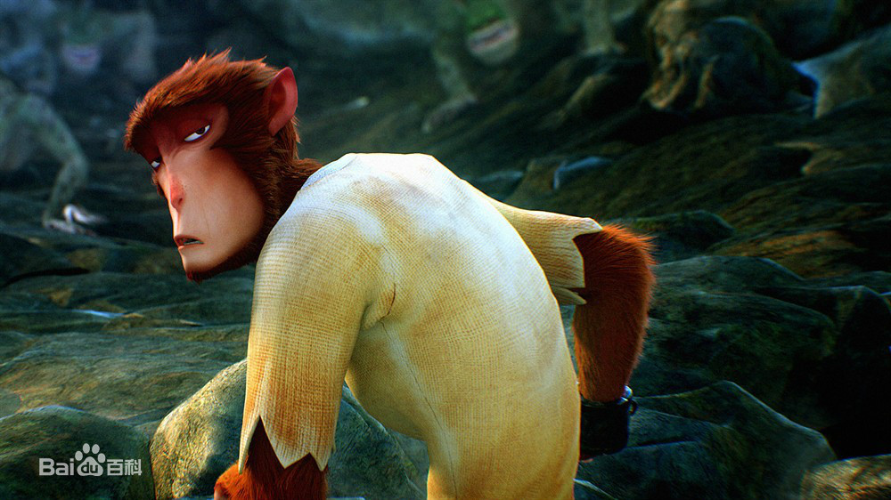
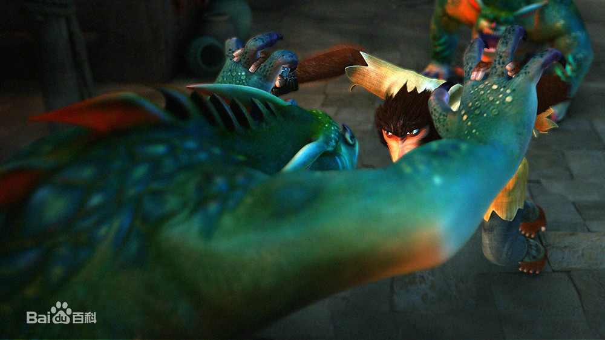
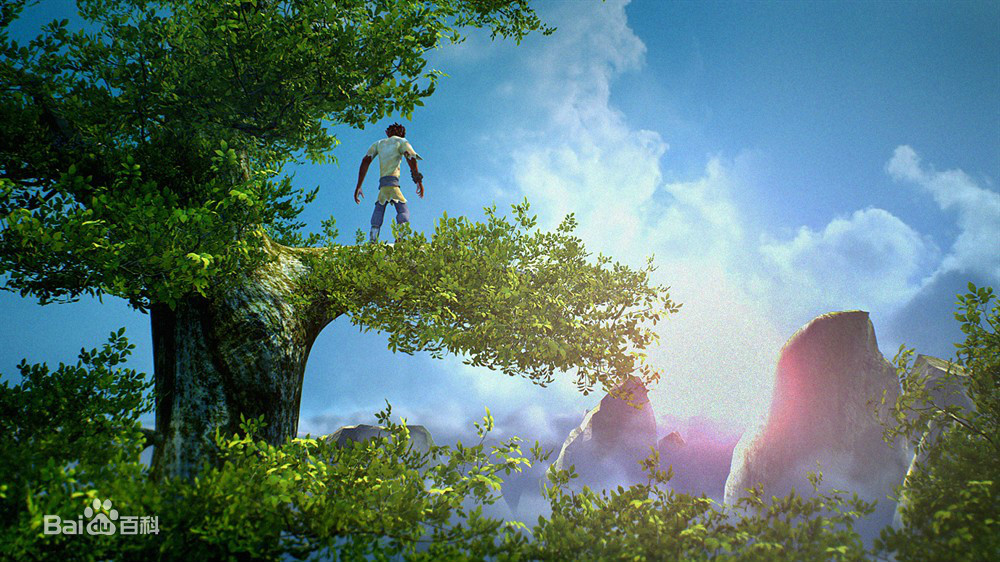
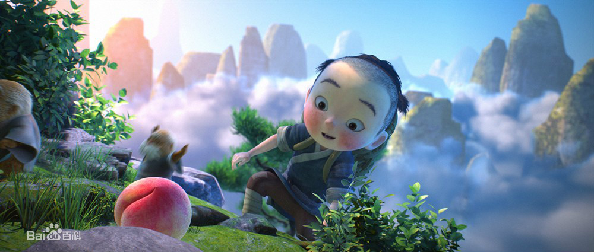
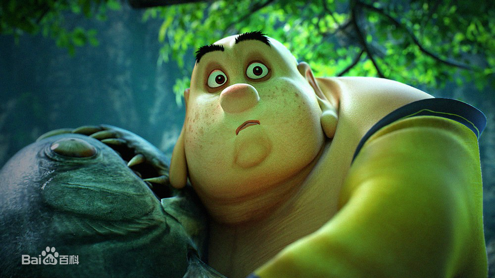

   
愿以我百年孤独，千难万阻，换取你来生安度，无忧如初。
《西游记之大圣归来》是根据中国传统神话故事《西游记》进行拓展和演绎的3D动画电影，由横店影视、天空之城、燕城十月与微影时代联合高路动画、恭梓兄弟、世纪长龙、山东影视、东台龙行盛世、淮安西游产业与永康壹禾共同出品，田晓鹏执导，张磊、林子杰、刘九容和童自荣等联袂配音。
中文名
西游记之大圣归来
制片人
刘志江、姜辉、林中伦、杨丹
外文名
Monkey King: Hero Is Back
类 型
神话、动画
出品公司
横店影视，天空之城，燕城十月，微影时代
上映时间
2015年07月10日
发行公司
聚合影联
票 房
9.56亿人民币
制片地区
中国
对白语言
普通话
导 演
田晓鹏
色 彩
彩色
编 剧
田晓鹏、刘虎、米粒、金冉、金成
主要奖项
第30届中国电影金鸡奖最佳美术片